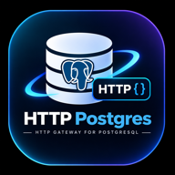

Call with fetch()
Send parameterized SQL from any runtime with standards-compatible HTTP support.

HTTP PostgreSQLOpen-source TypeScript infrastructure
A self-hosted bridge for serverless, edge, workflow, and sandboxed runtimes that can call fetch() but cannot open a PostgreSQL connection.
const response = await fetch(
`${PG_GATEWAY_URL}/query`,
{
method: "POST",
headers: {
"content-type": "application/json",
"x-api-key": PG_API_KEY,
"x-database": "app"
},
body: JSON.stringify({
query: "SELECT * FROM messages WHERE id = $1",
parameters: [42]
})
}
);{ "rows": [{ "id": "42", "message": "hello" }] }The missing connection layer
Short-lived runtimes are excellent at HTTP and awkward at long-lived database connections. Run the gateway beside PostgreSQL, then give remote functions a small JSON API instead of database credentials and socket management.
fetch()Send parameterized SQL from any runtime with standards-compatible HTTP support.
The gateway verifies scoped keys, applies limits, and safely reuses PostgreSQL sessions.
Dedicated login roles make PostgreSQL the final authorization boundary for every query.
Built for real workloads
Choose the smallest execution model that fits the job, from an immediate query to a durable asynchronous workflow.
Read the route referenceInteractive reads and short operations with a direct JSON response.
POST /queryDurable execution records for work that should outlive the request.
type: "async"Send a complete set of statements and commit them as one transaction.
POST /transaction/executeAdd, inspect, and remove statements before making the final commit decision.
POST /transactionDefense in depth
API keys define the requested scope. Dedicated PostgreSQL roles enforce it again at the database boundary. Operational safeguards cover the rest of the path.
Run it yourself
Requires Node.js 22.13+ or 23.4+, PostgreSQL, and optionally Redis.
git clone https://github.com/http-postgres/http-postgres
cd http-postgres
npm ci
cp .env.example .env
npm run dev
curl http://localhost:8080/healthHTTP in. PostgreSQL out.